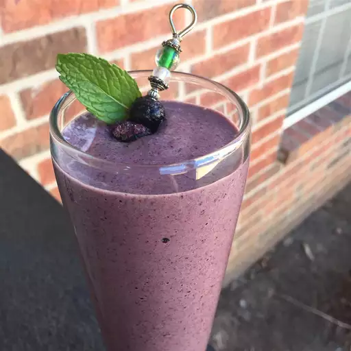

Home
Superfood Berry-Green Smoothie

Description
This is a meal-sized breakfast smoothie with protein powder and spinach greens that will fill you up from morning until lunch. High in antioxidants, fiber, protein, and vitamin C, this smoothie is both tasty and healthy!
Ingredients
- one and quarter cups unsweetened almond milk
- one celementine, peeled
- half cup frozen raspberries
- one cup spinach
- one tablespoon chia seeds
- one tablespoon flaxseed meal
- 1 cup frozen blueberries
- 1 scoop vanilla protein powder
steps
- Place almond milk, clementine, raspberries, spinach, chia seeds, flaxseed meal, blueberries, and protein powder in a blender, respectively. Blend on high until smooth, about 30 seconds.